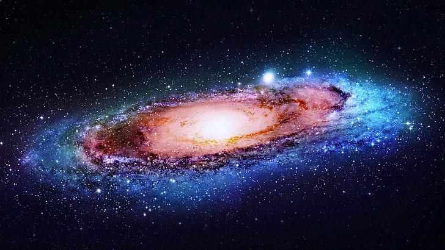

A galaxy is a system of stars, stellar remnants, interstellar gas, dust, dark matter, bound together by gravity. The word is derived from the Greek galaxias (γαλαξίας), literally 'milky', a reference to the Milky Way galaxy that contains the Solar System. Galaxies, averaging an estimated 100 million stars, range in size from dwarfs with less than a hundred million stars, to the largest galaxies known – supergiants with one hundred trillion stars each orbiting its galaxy's center of mass. Most of the mass in a typical galaxy is in the form of dark matter, with only a few percent of that mass visible in the form of stars and nebulae. Supermassive black holes are a common feature at the centres of galaxies.
Galaxies are categorized according to their visual morphology as elliptical, spiral, or irregular. Many are thought to have supermassive black holes at their centers. The Milky Way's central black hole, known as Sagittarius A*, has a mass four million times greater than the Sun. As of March 2016, GN-z11 is the oldest and most distant galaxy observed.
It has a comoving distance of 32 billion light-years from Earth, and is seen as it existed just 400 million years after the Big Bang. In 2016, using 20 years of images from the Hubble space telescope, it was estimated that there were in total two trillion or more galaxies in the observable universe, and as many as an estimated 1×1024 stars (more stars than all the grains of sand on all beaches of the planet Earth). In 2021, data from NASA's New Horizons space probe was used to revise the earlier estimate to roughly 200 billion galaxies Most galaxies are 1,000 to 100,000 parsecs in diameter (approximately 3,000 to 300,000 light years) and are separated by distances on the order of millions of parsecs (or megaparsecs). For comparison, the Milky Way has a diameter of at least 26,800 parsecs (87,400 ly) and is separated from the Andromeda Galaxy (with diameter of about 152,000 ly), its nearest large neighbor, by 780,000 parsecs (2.5 million ly.) The space between galaxies is filled with a tenuous gas (the intergalactic medium) with an average density of less than one atom per cubic meter. Most galaxies are gravitationally organized into groups, clusters and superclusters. The Milky Way is part of the Local Group, which it dominates along with Andromeda Galaxy. The group is part of the Virgo Supercluster. At the largest scale, these associations are generally arranged into sheets and filaments surrounded by immense voids. Both the Local Group and the Virgo Supercluster are contained in a much larger cosmic structure named Laniakea
